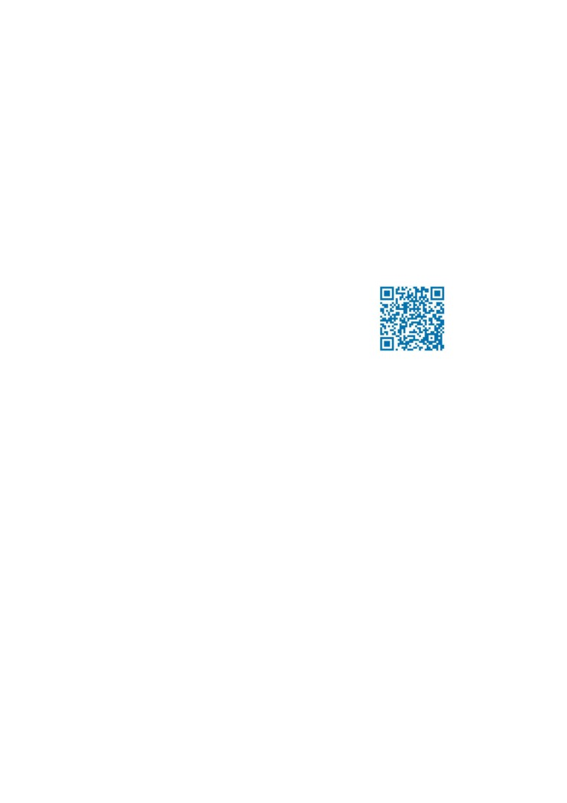

Gustavo Santana Bastos
São Luís - MA
E-mail: gustavo_s.bastos@hotmail.com
Solteiro
Telefone: (98) 3237-6444 / (98) 98171-5830
30/11/1994
OBJETIVO: ANALISTA DE SISTEMAS DE INFORMAÇÃO
FORMAÇÃO
Curso: Sistemas de Informação
Faculdade: Instituto Federal de Educação, Ciência e Tecnologia do Maranhão (São Luís, Monte Castelo)
Previsão de graduação: Julho/2019
IDIOMAS
Inglês Avançado
EXPERIÊNCIA PROFISSIONAL
Empresa: Diretoria de Gestão de Tecnologia da Informação (IFMA)
Contato para Referência: (98) 3218-9060 Falar com Fábio (Chefe do departamento);
Cargo: Bolsista/Trainee
Período: 01/2012 a 12/2012
Responsável pela manutenção dos microcomputadores, impressoras e da periférica das redes do Instituto Federal de
Educação, Ciência e Tecnologia do Maranhão, Campus Monte Castelo;
Empresa: Fromti Tecnologia
Contato para Referência: (98) 98233-3000 Falar com Marcelo
Cargo: Estagiário
Período: 01/2017 a 01/2018
Responsável pela manutenção dos microcomputadores, estações de trabalho, impressoras e da periférica das redes dos
clientes. Gerenciamento básico de rede, monitoração, suporte e gerenciamento de servidores físicos e virtuais, suporte à
virtualização utilizando Hyper-V e VMware, atendimento e suporte à cliente seguindo as normas de SLA (nível 1)
Empresa: LC Apoio Administrativo (Grupo Atlântica)
Contato para Referência: (98) 3089-3426 Falar com o Gestor de TI
Cargo: Assistente de TI
Período: 11/2018 - Período atual
Responsável por desenvolvimento de sistemas empresariais, levantamento de requisitos de sistemas, desenvolvimento
de relatórios utilizando base de dados SQL Server, suporte e utilização de sistema empresarial Sankhya, suporte à
cliente/usuários do sistema, suporte e manutenção de estação. Atendimento e suporte à cliente utilizando central de
chamados.
INFORMÁTICA
Conhecimentos no desenvolvimento de sistemas utilizando Java, Java Android, JavaScript, C, SQL, HTML,
CSS, Gulp, SaSS, Angular 2, WebService WSDL, SOAP, REST, Ecossistema Spring. Conhecimento dos
Padrões de Software e SOLID.
Experiência no desenvolvimento de sistemas utilizando Java, Java Android, JavaScript, SQL, HTML, CSS e
PHP 7.
1

OUTRAS ATIVIDADES
Bolsista do Programa Institucional de Bolsas de Iniciação Científica
(PIBIC) financiado pela Fundação de
Amparo à Pesquisa do Estado do Maranhão (FAPEMA);
Professor voluntário de informática básica participando de projeto de extensão Infotransforma 2.0 realizado no Centro
Educacional e Profissionalizante do Maranhão(CEPROMAR) em parceria com o Instituto Federal do Maranhão
(IFMA), atendendo às normas vigentes do projeto tendo como público-alvo, cidadãos de menor escolaridade que
buscam qualificação profissional.
QUALIFICAÇÕES E ATIVIDADES PROFISSIONAIS
Curso de Informática básica - DELTA INFORMÁTICA, São Luís - 2008;
Curso de montagem e manutenção de computadores - DELTA INFORMÁTICA, São Luís/MA - 2008;
Técnico em eletrotécnica - Instituto Federal do Maranhão/Campus Monte Castelo, 2010 a 2012;
Curso de Inglês (Nível 4) - MyEnglishOnline, MEC/Capes - 2014;
Curso de Programação de Computadores e Dispositivos móveis - IFSP - 2017;
Workshop Fullstack Angula e Spring - Algaworks - 2018;
Curso Masterclass Power BI - Intellio, São Luís/MA - 2019.
OBSERVAÇÃO
Graduação em andamento (8º período);
Endereço para acessar currículo na plataforma lattes:
Endereço de perfil GitHub:
Categoria Nacional de Habilitação -Categoria B
2